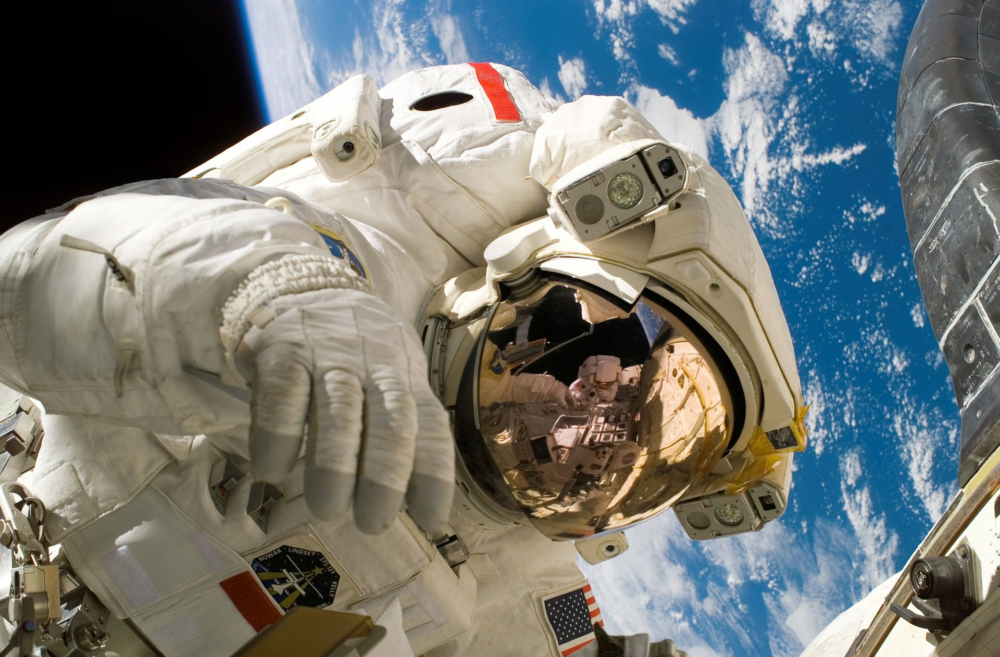
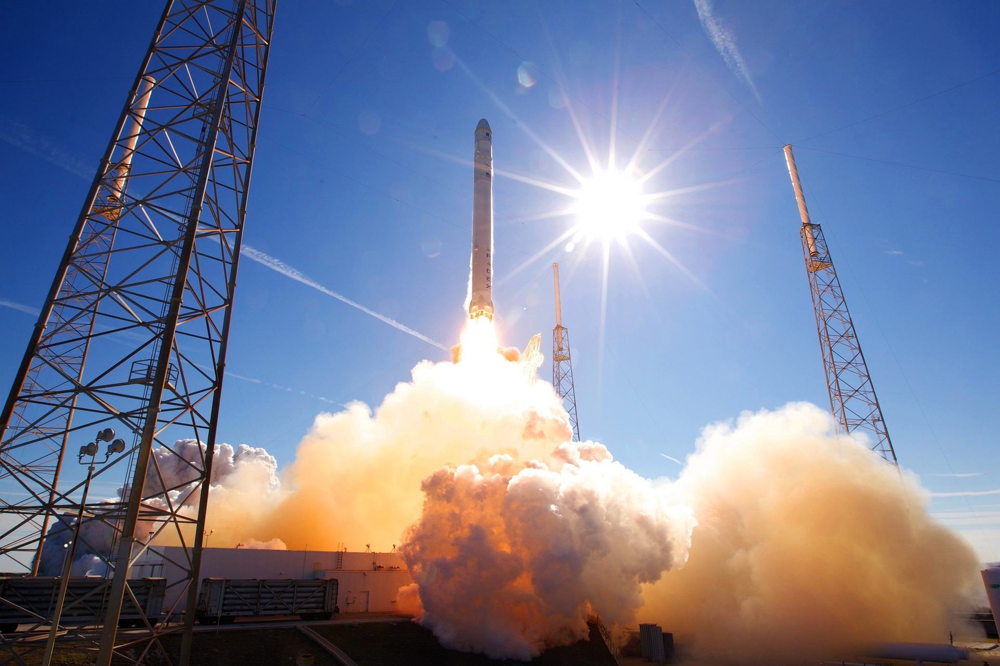

Training
We take pride in providing our passengers with the highest quality training to ensure a safe and enjoyable space tourism experience. Our training programs are designed to give our passengers the skills and knowledge they need to fully enjoy their journey into space. We provide training in the following areas:
- Pre-flight training: Before your flight, we provide all passengers with pre-flight training. This includes an overview of the spacecraft and its features, as well as a briefing on the flight plan and emergency procedures.
- Safety training: Safety is our top priority, and all passengers receive safety training to ensure they know how to respond in the event of an emergency. This includes instructions on how to wear and use safety equipment, as well as information on emergency procedures and evacuation.
- Medical training: Space travel can be physically demanding, and we want our passengers to be prepared for the experience. Our medical training covers the effects of space travel on the human body and provides tips on how to stay healthy during the flight.
- Gravity training: Our passengers receive training to help them prepare for the unique experience of weightlessness and artificial gravity in space. This includes learning how to move and navigate in a zero-gravity environment.
- Flight-specific training: Depending on the specifics of your flight, we may provide additional training to help you prepare for the experience. For example, if your flight includes a spacewalk, we will provide training on how to use a spacesuit and perform a spacewalk.
How does the artificial gravity work?
Artificial gravity is a concept that has long been explored by scientists and space enthusiasts alike. It involves the creation of a gravitational force that is simulated within a spacecraft, allowing passengers and crew to experience the effects of gravity even when they are far from Earth. At Origin, we are committed to providing our passengers with the most comfortable and enjoyable experience possible, which is why we have begun incorporating artificial gravity into our spacecraft.
One way to create artificial gravity on a large passenger spaceship is by rotating the spacecraft around its center of mass. As the spacecraft rotates, the centrifugal force created by the rotation produces a gravitational force that is felt by the occupants. The strength of the artificial gravity depends on the speed of rotation and the distance from the center of rotation. By carefully controlling these factors, we can create a comfortable level of artificial gravity that is similar to what passengers experience on Earth.
To implement artificial gravity on our spacecraft, we have designed the structure of each spacecraft with a central axis of rotation. The living quarters, sleeping areas, and other essential facilities are arranged around this axis, with the rotation occurring at a constant speed. Passengers are able to move around freely within the rotating environment, experiencing the effects of gravity as they go about their daily activities.
One of the main benefits of artificial gravity is that it can help to reduce the negative effects of extended space travel on the human body. Without gravity, the body can experience a range of issues, including muscle and bone loss, decreased cardiovascular function, and vision problems. By incorporating artificial gravity into our spacecraft, we can help to mitigate these effects, making the space travel experience more comfortable and safer for our passengers.
At Origin, we are excited about the possibilities of artificial gravity and will continue to explore this technology as we design and build our spacecraft for commercial space tourism. Our goal is to provide our passengers with a truly unique and unforgettable experience, and with the help of artificial gravity we are bringing our vision to life.
Will passengers need to acclimate to the ship's environment?
As a space tourism company, we understand that space travel presents unique challenges and considerations for our passengers. While we are dedicated to providing a safe and comfortable experience for everyone who travels with us, there are certain factors that passengers may need to acclimate to before their flight, including the artificial environment of their ship.
When humans are in space, they are exposed to a range of environmental factors that are different from what they experience on Earth. These factors include microgravity, which can cause disorientation, motion sickness, and other physical effects. Additionally, the environment inside a spacecraft can be different from what passengers are used to on Earth, with factors such as air pressure, temperature, and humidity all being carefully controlled to ensure the safety and comfort of those on board.
To help our passengers acclimate to the artificial environment of their ship before their flight, we offer pre-flight training and familiarization programs. These programs may include virtual reality simulations, hands-on training with spacecraft equipment, and opportunities to ask questions and interact with our experienced crew.
During the flight itself, our crew will be available to help passengers acclimate to the unique environment of the spacecraft. This may include providing guidance on how to move around in microgravity, how to use specialized equipment, and how to manage any physical or psychological effects that may arise.
Launch
Every part of our space cruises have been made as safe and comfortable as possible, including launch. Launching a spacecraft into space is a complex and carefully orchestrated process, and we have designed our launch procedures to ensure the safety and well-being of everyone on board.
On the day of the launch, our passengers will arrive at the designated launch site and be greeted by our experienced crew. They will receive a safety briefing and be fitted with specialized flight suits and other equipment necessary for their journey. Passengers will also undergo final medical checks to ensure they are in good health and ready for the flight.
Once everyone is on board and the spacecraft is prepared for launch, the countdown will begin. During this time, our crew will closely monitor the spacecraft and all systems to ensure everything is functioning properly. Once the countdown reaches zero, the spacecraft will be launched into space, propelled by powerful rocket engines.
During the launch phase, our passengers will experience strong accelerations and vibrations as the spacecraft reaches orbit. To ensure their safety and comfort, our spacecraft is designed with advanced systems that minimize these effects and protect our passengers from any potential hazards.
Once the spacecraft reaches orbit, our passengers will be able to move freely around the cabin and begin to enjoy their space tourism experience. They will be able to take in stunning views of the Earth, participate in a range of activities and experiments, and acclimate to the unique environment of space.
How does a starliner launch?
Great care is taken to ensure that our space cruise launches are safe and successful from a technical standpoint. Launching a spacecraft into space requires a complex and carefully orchestrated sequence of events, and we have designed our launch procedures to be as reliable and efficient as possible.
- Pre-Launch Checks: Before launch, the spacecraft and launch vehicle will undergo a series of pre-launch checks to ensure that all systems are functioning properly. This may include checking the propulsion system, communication systems, life support systems, and other critical components.
- Countdown: Once all pre-launch checks have been completed, the countdown will begin. This involves a series of procedures and checks that take place over a set period of time, leading up to the launch itself.
- Ignition: When the countdown reaches zero, the launch vehicle's engines will ignite, propelling the spacecraft into the sky. The spacecraft will gradually accelerate, building up speed until it reaches the necessary velocity to enter orbit.
- Separation: Once the spacecraft has reached the desired altitude and velocity, it will separate from the launch vehicle. This may involve a stage separation, where one or more parts of the launch vehicle are jettisoned to reduce weight and improve efficiency.
- Orbit Insertion: After separation, the spacecraft will use its own propulsion system to fine-tune its trajectory and enter a stable orbit around the Earth. This may involve a series of engine burns and course corrections to ensure that the spacecraft is in the correct position and altitude.
- Post-Launch Checks: Once the spacecraft is in orbit, the crew will conduct a series of post-launch checks to ensure that all systems are functioning properly and that the spacecraft is safe and ready for space tourism operations.
Docking
We use a variety of docking mechanisms and procedures to dock our space cruisers at space stations and planets mid-flight. Docking in space is a complex process that requires precise navigation and control, as well as the use of specialized docking systems and equipment. Steps used to dock our ships dock at space stations and planets mid-flight include:
- Navigation: Before approaching a space station or planet, our space cruisers use advanced navigation systems to determine their position and trajectory, as well as the position and trajectory of the target destination.
- Docking System: Our space cruisers are equipped with a variety of docking systems that allow us to dock with different types of space stations and planets. These include berthing ports, docking adapters, and other specialized systems.
- Approach: As the spacecraft approaches the target destination, the crew carefully maneuvers the spacecraft using its propulsion system to align it with the docking system.
- Docking: Once the spacecraft is aligned with the docking system, the docking mechanism is activated to secure the spacecraft to the space station or planet. This involves the use of mechanical latches, bolts, and other mechanisms to hold the spacecraft in place.
- Transfer: Once the spacecraft is securely docked, our passengers and crew can transfer to the space station or planet. This involves the use of airlocks, docking tunnels, and other systems to create a safe and secure passage between the spacecraft and the target destination.
- Undocking: When it's time to leave the space station or planet, the spacecraft's crew will activate the undocking mechanism to release the spacecraft from the docking system. The spacecraft will then use its propulsion system to move away from the target destination and continue its mission.
Recovery
Recovering a spacecraft after a space tourism mission is a complex and important process that requires careful planning and execution to ensure the safety of our passengers and crew, as well as the spacecraft itself. Our experienced teams and best researchers collaborate to ensure your flight’s recovery is safe and smooth. Here's an overview of the recovery process for our spaceships:
- Re-entry: After completing the space tourism mission, the spacecraft will begin the re-entry process. This involves using its propulsion system to slow down and change its trajectory to re-enter the Earth's atmosphere.
- Heat Shielding: As the spacecraft re-enters the Earth's atmosphere, it will experience extreme heat and pressure. To protect the spacecraft and its occupants from these conditions, the spacecraft is equipped with a heat shield that dissipates the heat and protects the crew and passengers.
- Parachute Deployment: Once the spacecraft has slowed down and descended to a safe altitude, the parachute system will deploy to slow the spacecraft's descent and stabilize its landing.
- Landing: The spacecraft will then touch down on land or in water, depending on the landing site and conditions. We have designated landing sites where the recovery team will be waiting to receive the spacecraft.
- Recovery: After landing, our recovery team will immediately begin the process of recovering the spacecraft and its occupants. This involves assessing the condition of the spacecraft and its systems. We always have emergency teams ready should anything go wrong, but our starliners are built to easily withstand reentry and provide a landing that is both safe and comfortable.
- Post-Flight Analysis: After the spacecraft and its occupants have been recovered, we conduct a detailed analysis of the mission to assess its success and identify areas for improvement. This includes analyzing data from the spacecraft's systems, as well as feedback from the passengers and crew.